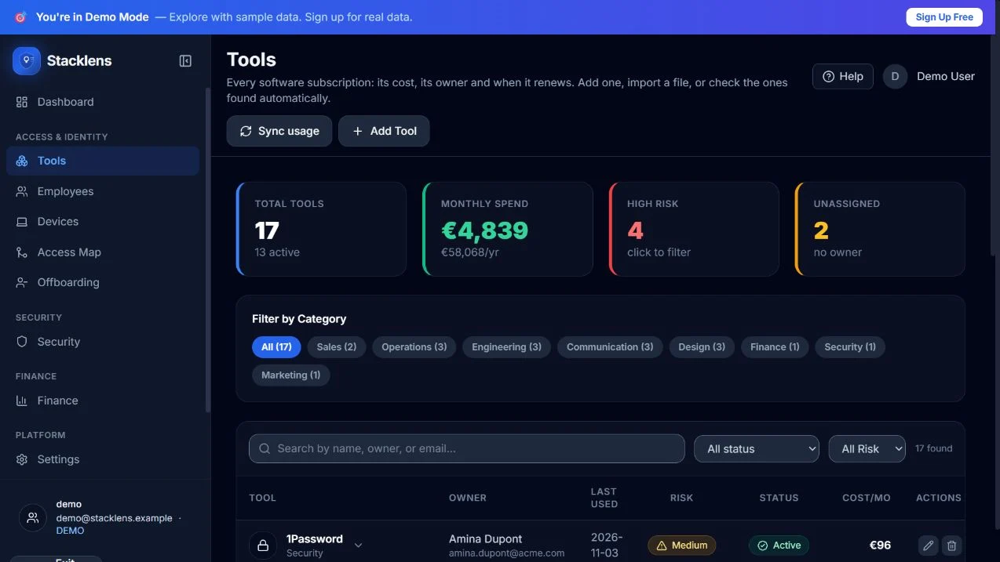
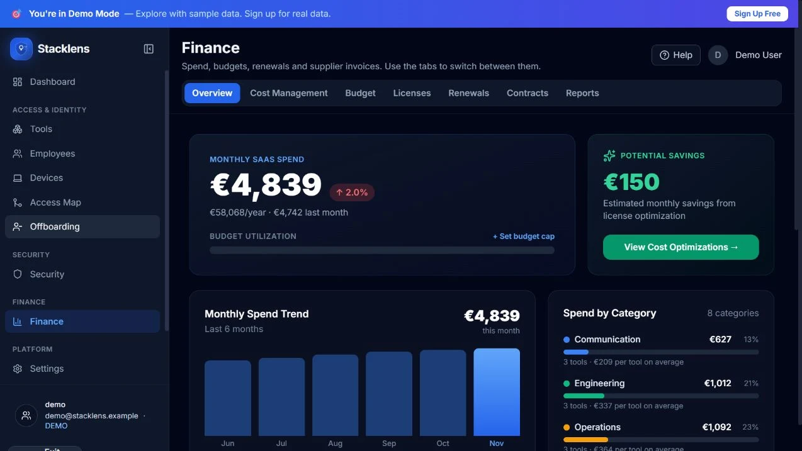

Comprendre ce qui est payé et qui y a accès
Les abonnements, leurs coûts et les accès des collaborateurs sont difficiles à suivre séparément. Le projet les rassemble pour aider à identifier les points à vérifier.
Des dépenses logicielles aux actions à mener.

Les abonnements, leurs coûts et les accès des collaborateurs sont difficiles à suivre séparément. Le projet les rassemble pour aider à identifier les points à vérifier.
Structurer les parcours d’audit et de suivi, hiérarchiser les informations et développer des écrans de gestion autour des outils, des collaborateurs et des dépenses.

Un tableau de bord relie les alertes aux actions à examiner.

Chaque outil est associé à son coût, son responsable et son statut.

Les dépenses et budgets sont présentés ensemble, avec des vues dédiées.
Captures de la démonstration publique avec données fictives : ces chiffres ne sont pas des résultats clients. Cliquez sur une image pour l’agrandir.
Ouvrez le site existant dans un nouvel onglet.
Parlons de vos utilisateurs, des fonctions essentielles et de votre première version.